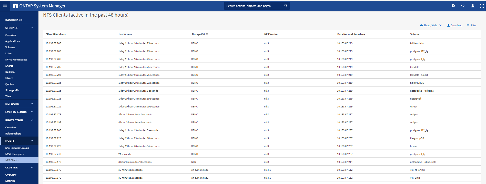
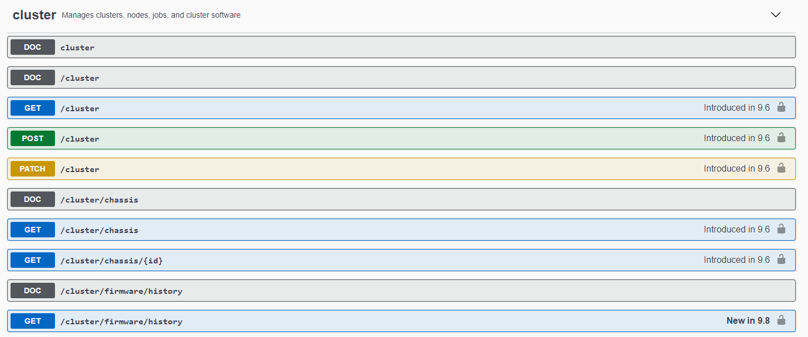
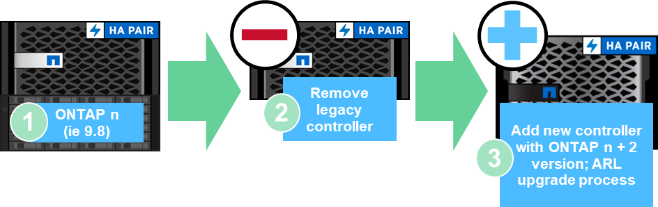

Solicitar cambios en el documento
Solicitar cambios en el documento Editar en GitHub
Editar en GitHub Guía del colaborador
Guía del colaboradorMejoras en la simplicidad
Colaboradores
En esta sección se tratan las mejoras de ONTAP 9.8 que mejoran la sencillez. Esto incluye lo siguiente:
-
Actualizaciones del administrador del sistema de ONTAP
-
Mejoras en la actualización y la actualización tecnológica de ONTAP
-
Mejoras en la API de REST
Mejoras de System Manager
ONTAP 9.7 introdujo una renovación de la interfaz gráfica de usuario de System Manager con la intención de simplificar la forma en que los administradores gestionan las operaciones básicas de ONTAP, como el aprovisionamiento de almacenamiento y las operaciones cotidianas. La nueva interfaz gráfica de usuario también utiliza las API DE REST, que se añadieron en ONTAP 9.6. En ONTAP 9.8, se ha eliminado la vista clásica de System Manager.
Una de las principales diferencias entre las interfaces es la consola, que es la primera página a la que se llega cuando se inicia sesión por primera vez en ONTAP System Manager de NetApp.
Los siguientes gráficos muestran una comparación en paralelo de las versiones clásica y nueva de la consola de System Manager.

Cuando miramos más de cerca, podemos ver algunas diferencias importantes.
Estado/Alertas
Cuando se inicia sesión por primera vez en Classic System Manager, la esquina superior izquierda tiene una lista de errores de clúster y nodo. Estos se resumen en enlaces clickable. Al hacer clic en uno de los enlaces, se le redirigirá a otra página de System Manager.
También tenía un área separada que muestra el estado de alta disponibilidad del clúster para ver si un nodo se ha producido una conmutación al nodo de respaldo. En las siguientes imágenes, vemos la vista del tablero y lo que vemos cuando hacemos clic en uno de los enlaces―en este caso, nuestros discos fallidos.

Para ver otras alertas, debe volver a la consola, lo que requiere tiempo y clics adicionales. Uno de los objetivos de la nueva vista de System Manager es simplificar este proceso.
La siguiente figura muestra la nueva consola de System Manager. Las dos diferencias principales entre las vistas de estado y alerta son que ahora tenemos el estado de alta disponibilidad del nodo y las alertas en la misma ventana y, en lugar de hacer clic fuera del panel principal, las alertas se encuentran ahora en un cuadro desplegable.

Vistas de capacidad
También se reducen los clics adicionales para ver más capacidad. En el clásico System Manager de ONTAP, las tasas de eficiencia del almacenamiento y de capacidad se encontraron en Información general del clúster, con pestañas para hacer clic en él para encontrar información. La nueva vista de System Manager consolida la tasa de eficiencia del almacenamiento y las vistas de capacidad en un único gráfico.

|
La nueva interfaz de usuario aprovecha el espacio lógico usado y el espacio físico disponible. |

Las vistas de protección de datos se han movido a su propio panel de protección, y Esta página ofrece aspectos más profundos y granulares de la protección de datos en el clúster y también ofrece una ubicación para aprovechar la nueva continuidad de negocio de SnapMirror (SM-BC).

Visualización de red
El Administrador del sistema ONTAP 9.8 también elimina la vista aplicación y objetos a favor de una nueva vista de visualización de red que muestra la topología de red del clúster, así como las X rojas cuando un puerto está inactivo.

Vistas de rendimiento
Los gráficos de datos de rendimiento de System Manager ahora conservan los datos del clúster hasta 1 año en lugar de los datos de rendimiento clásicos de System Manager solo están disponibles mientras inicia sesión. En System Manager 9.8 de ONTAP, ahora puede hacer clic en la hora, el día, la semana, el mes o el año. También existe una forma de descargar los datos de rendimiento en un volumen compartido en clúster.

Análisis del sistema de archivos
En entornos con un gran número de archivos, intentar encontrar información acerca de la capacidad de carpetas, la antigüedad de los datos y el número de archivos suele requerir comandos o scripts con un gran consumo de tiempo que ejecutan operaciones en serie a través de protocolos NAS, como ls, du, find, y. stat.
System Manager 9.8 de ONTAP permite a los administradores localizar la información del sistema de archivos en cualquier volumen de almacenamiento NAS de forma rápida y sencilla, gracias a la habilitación de un escáner de bajo impacto para cada volumen. Este escáner rastreará el sistema de archivos de ONTAP en segundo plano con un trabajo de baja prioridad y proporcionará una gran cantidad de información disponible tan pronto como navegue hasta un volumen en System Manager 9.8 o posterior.
Habilitar el análisis de sistemas de archivos es tan sencillo como navegar hasta el volumen que desea analizar. Vaya a almacenamiento > volúmenes y utilice la búsqueda para encontrar el volumen que desea. Haga clic en el volumen y, a continuación, en la ficha Explorador.
Desde aquí, verá el enlace Habilitar análisis en la parte derecha de la página.

Después de hacer clic en Activar, se inicia el escáner. El tiempo de finalización depende de la cantidad de objetos del volumen y de la carga del sistema. Una vez que haya terminado, verá toda la estructura de directorio llena en la vista de System Manager. Esta vista se puede navegar por el árbol de directorios y proporciona acceso a información del historial, información del tamaño de directorio y tamaños de archivo.
En la siguiente figura se muestran vistas del volumen Tech_ONTAP de mi clúster, para el que se usa como archivado "Episodios del podcast Tech OnTap de NetApp".

Al hacer clic en una carpeta, aparece una lista de archivos en la parte derecha de la página.

Si lo elige, puede habilitar Mostrar hora a la que se accedió para obtener una mirada en la última vez que se accedió a un archivo.

En la parte inferior de la página, puede ver cuántos datos no se han accedido en un año, así como el directorio y el archivo cuenta en esa carpeta.

Además de ser capaz de encontrar rápidamente información sobre el directorio y el tamaño de los archivos, esta función también proporciona información útil para decidir si la tecnología FabricPool de NetApp sería efectiva para reducir la cantidad de datos inactivos que ocupan espacio en sus agregados.
Clientes NFS activos
ONTAP 9.7 introdujo una forma de ver a qué clientes NFS accedían a volúmenes específicos de un clúster, así como qué direcciones IP de LIF de datos estaban en uso con el nfs connected-clients comando. Este comando se trata de forma detallada en la "TR-4067: Prácticas recomendadas y guía de implementación de ONTAP NFS de NetApp". Este comando es útil en situaciones en las que necesita averiguar qué clientes están conectados al sistema de almacenamiento, como actualizaciones, mejoras tecnológicas o informes simples.
System Manager 9.8 de ONTAP ofrece una forma de ver estos clientes con la GUI, así como una forma de exportar la lista a un archivo .csv. Desplácese hasta hosts > NFS Clients y vea una lista de clientes NFS que han estado activos en las últimas 48 horas.

Otras mejoras de System Manager 9.8
ONTAP 9.8 también incorpora las siguientes mejoras a System Manager:
|
|
En la siguiente figura se muestran las actualizaciones de firmware de MetroCluster y de un solo clic.

Mejoras en la API de REST
La compatibilidad con API DE REST, añadida en ONTAP 9.6, permite a los administradores del almacenamiento aprovechar las llamadas API estándar del sector al almacenamiento de ONTAP en sus scripts de automatización sin tener que interactuar con la CLI o la GUI.
Con System Manager, existen muestras y documentación de la API DE REST. Solo tiene que ir a la interfaz de gestión del clúster desde un navegador web y añadir docs/api A la dirección (mediante HTTPS).
Por ejemplo:
Esta página proporciona un glosario interactivo de API DE REST disponibles, así como un método para generar sus propias consultas de API DE REST.

En ONTAP 9.8, las API DE REST se comentarán ahora con qué versión se han añadido, lo que contribuye a simplificar la vida cuando se intenta mantener las secuencias de comandos funcionando en varias versiones de ONTAP.

En la siguiente tabla se proporciona una lista de las nuevas API DE REST en ONTAP 9.8.
Cluster * Historial de firmware * licencias de clúster – agrupaciones de capacidad * licencias de clúster – gestores de licencias * indicadores de nodo * carga de imagen de software MetroCluster * Mediador * Diagnóstico * Gestión/creación * grupos DR * interconexiones * nodos * Operaciones * redes* * indicadores de puerto Ethernet * Información de puerto de conmutador * conmutador Información * Métricas de interfaz FC * grupos de pares BGP * métricas de interfaz IP * políticas de servicio de LIF * métricas DE SAN* * NVMe |
Seguridad * modo FIPS habilitar/deshabilitar * Habilitar/deshabilitar el cifrado de datos * Vaults de Azure Key * Google GCP-KMS * seg IP * almacenamiento* * copia/movimiento de archivos * PARCHE/modificación de FlexCache® de NetApp * Archivos supervisados * políticas de Snapshot * políticas de eficiencia del almacenamiento * Administración de archivos y directorios (eliminación asincrónica, QoS y análisis de sistemas de archivos) NAS * Redirección de registro de auditoría * sesiones CIFS * seguimiento de acceso a archivos/rastreo de seguridad gestionar * resolución de eventos almacén de objetos/S3 * Gestión de bloques S3 * grupos S3 * políticas S3 |
Para obtener más información acerca de las actualizaciones de System Manager en ONTAP 9.8, consulte "Podcast de Tech OnTap, episodio 266: ONTAP System Manager 9.8 de NetApp".
Mejoras en actualizaciones y mejoras tecnológicas: ONTAP 9.8
Tradicionalmente, las actualizaciones de ONTAP han tenido que realizarse en una o dos versiones principales para trabajar sin interrupciones. Para los administradores de almacenamiento que no actualizan con frecuencia, esto se convierte en un importante dolor de cabeza y pesadilla logística cuando por fin es hora de actualizar ONTAP. ¿Quién desea actualizar y reiniciar varias veces en una ventana de mantenimiento?
ONTAP 9.8 ahora admite actualizaciones a versiones de ONTAP en un plazo de dos años. Esto significa que si desea actualizar de 9.6 a 9.8, puede hacerlo directamente sin tener que ir a ONTAP 9.7.
La siguiente tabla recoge las actualizaciones de las versiones de ONTAP de NetApp.
| Punto de partida | Actualización directa a: |
|---|---|
ONTAP 9.6 |
ONTAP 9.7, ONTAP 9.8 |
ONTAP 9.7 |
ONTAP 9.8, ONTAP 9.n+2 |
ONTAP 9.8 |
ONTAP 9.n+1, ONTAP 9.n+2 |
Este proceso simplificado de actualización también proporciona una forma de llevar a cabo renovaciones optimizadas. Cuando se envía un nodo de hardware nuevo, tiene la versión de ONTAP más reciente instalada. Anteriormente, si el clúster existente ejecutaba una versión de ONTAP anterior, tenía que actualizar los nodos existentes a la misma versión de ONTAP que el nodo nuevo o tenía que degradar el nodo nuevo a la versión de ONTAP anterior. Y, como complicación adicional, si el hardware más nuevo no se pudo reducir, se vio obligado a tomar una ventana de mantenimiento para actualizar el clúster existente.
Con la ventana de versión mixta de 2 años de ONTAP 9.8, ahora es posible añadir nodos nuevos que ejecuten nuevas versiones de ONTAP a un clúster para permitir las actualizaciones de las controladoras moviendo volúmenes de los nodos que ejecuten 9.8 a versiones posteriores de ONTAP. Además, el proceso de actualización de reubicación de agregados no disruptiva permite la actualización de la controladora de los sistemas que deben ejecutar ONTAP 9.8 (por ejemplo, sistemas de la serie 8000) a los nuevos modelos que se introducen en versiones posteriores de ONTAP.
Se recomienda limitar la hora en que el clúster de ONTAP opera en un estado de versión mixto.

Este proceso también se amplía a las actualizaciones de clúster, donde desea cambiar todo un par de alta disponibilidad de un clúster. Ahora es posible con el plazo de revisión de 2 años para ONTAP 9.8 y el movimiento de volúmenes no disruptivo.
Los pasos básicos son los siguientes:
-
Conecte los nuevos sistemas a un clúster existente, con versiones de ONTAP en una ventana de 2 años.
-
Use movimiento de volúmenes no disruptivo para evacuar los nodos.
-
Desúnase a los nodos antiguos del clúster.